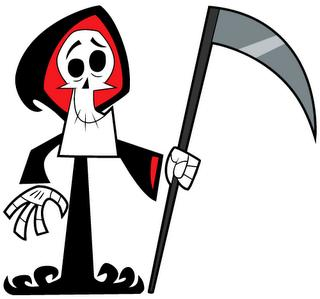

Festividad de Dia de Muertos
¿Que se celebra?
El Día de Muertos es una celebración mexicana de origen mesoamericano que honra a los difuntos el 2 de noviembre, comienza desde el 1 de noviembre, y coincide con las celebraciones católicas de Día de los Fieles Difuntos y Todos los Santos
- Es una festividad que se celebra en México y en algunos países de América Central, así como en muchas comunidades de los Estados Unidos, donde existe una gran población mexicana y centroamericana. La Unesco ha declarado la festividad como Patrimonio Cultural Inmaterial de la Humanidad. Existe en Brasil una celebración similar conocida como Dia dos Finados, aunque esta festividad no tiene las mismas raíces prehispánicas que el Día de los Muertos,
Las principales aspectos de éstos días:
- Ofrendas como bienvenida.
- Iluminando el camino de regreso a casa
- El humor mexicano frente a la muerte.
- Las calaveras literarias.
- El pan de muerto que se comen los vivos.
- Algunos datos interesantes sobre el día de muertos.

Juan Carlos Vargas Hidalgo
Fechas Principales
Las celebraciones empiezan el día 28 de octubre y terminen el día 3 de noviembre, aunque los días que cobran mayor importancia son 30 de octubre y 1° y 2 de noviembre.
- La celebración empieza el día 28 de octubre a las 12:00 horas, día en que se conmemora a las personas que tuvieron una muerte violenta y para quienes se colocan en el altar flores moradas y azules.
- El 29 de octubre con una ofrenda semejante a la anterior se festeja a los que fallecieron ahogados.
- El 30 de octubre se celebra a los que fallecieron a l nacer y que están en el “limbo”, para quienes se colocan en el altar flores moradas y blancas, se colocan también agua bendita y se enciende una veladora.
- 31 de octubre, este día es muy especial pues se festeja a los chiquitos y en el altar no deben de faltar canastitas elaboradas con papel picado de colores para las niñas y guacalitos para los niños llenos de dulce de jamoncillo y de pepita, se colocan también tamalitos de dulce, caldito de pollo con verduras, fruta, jamoncillo en figuritas, vasos de agua de sabores, chocolate, caramelos, velitas y juguetitos de barro pintados con colores brillantes, ya que se piensa que a las almas de los niños les gusta jugar durante la visita anual a sus casas.
- Para el 1° de noviembre a las 12:00 horas se levanta la ofrenda de los chiquitos y se coloca la ofrenda de los mayores, retirándola
- el 2 de noviembre a las 12:00 de día; no se debe de olvidar que como el visitante es un espíritu, solamente podrá aspirar el aroma de lo ofrendado y eso será suficiente para que se vaya satisfecho, posteriormente las familias unidas visitan el cementerio, llegan hasta las tumbas de sus familiares, las asean, las pintan, las riegan con agua bendita y las adornan con flores naturales y con coronas elaboradas con flores de papel, intercambian los alimentos con los amigos y familiares y se los comen. Esta visita que se hace al cementerio a las doce del día del 2 de noviembre y tiene como fin el de “encaminar” a las almas de nuestros seres queridos otra vez al más allá.
Dia de Muertos
Ofrendas
El Altar de muertos es un elemento fundamental en el conjunto de tradiciones mexicanas del Día de muertos, que consiste en
instalar altares domésticos en honor de los muertos de la familia. El altar de muertos es una construcción simbólica de las creencias mesoamericanas
sincréticas, que consiste en colocar plataformas en donde se depositan ofrendas florales y alimentos para rendir tributo a los antepasados
familiares, a los difuntos cercanos o a personajes ilustres.
- Elementos imprescindibles para recibir a las ánimas
- EL AGUA. La fuente de la vida, se ofrece a las ánimas para que mitiguen su sed después de su largo recorrido y para que fortalezcan su regreso. En algunas culturas simboliza la pureza del alma.
- LA SAL. El elemento de purificación, sirve para que el cuerpo no se corrompa, en su viaje de ida y vuelta para el siguiente año.
- VELAS Y VELADORAS. Los antiguos mexicanos utilizaban rajas de ocote. En la actualidad se usa el cirio en sus diferentes formas: velas, veladoras o ceras. La flama que producen significa "la luz", la fe, la esperanza. Es guía, con su flama titilante para que las ánimas puedan llegar a sus antiguos lugares y alumbrar el regreso a su morada.
- COPAL E INCIENSO. El copal era ofrecido por los indígenas a sus dioses ya que el incienso aún no se conocía, este llegó con los españoles. Es el elemento que sublima la oración o alabanza. Fragancia de reverencia. Se utiliza para limpiar al lugar de los malos espíritus y así el alma pueda entrar a su casa sin ningún peligro.
- LAS FLORES. Son símbolo de la festividad por sus colores y estelas aromáticas. Adornan y aromatizan el lugar durante la estancia del ánima, la cual al marcharse se irá contenta, el alhelí y la nube no pueden faltar pues su color significa pureza y ternura, y acompañan a las ánimas de los niños.
- EL PETATE. Entre los múltiples usos del petate se encuentra el de cama, mesa o mortaja. En este particular día funciona para que las ánimas descansen así como de mantel para colocar los alimentos de la ofrenda.
- EL IZCUINTlE. Lo que no debe faltar en los altares para niños es el perrito izcuintle en juguete, para que las ánimas de los pequeños se sientan contentas al llegar al banquete. El perrito izcuintle, es el que ayuda a las almas a cruzar el caudaloso río Chiconauhuapan, que es el último paso para llegar al Mictlán.
- EL PAN. El ofrecimiento fraternal es el pan. La iglesia lo presenta como el "Cuerpo de Cristo". Elaborado de diferentes formas, el pan es uno de los elementos más preciados en el altar.
- EL GOLLOTE Y LAS CAÑAS. se relacionan con el tzompantli. Los golletes son panes en forma de rueda y se colocan en las ofrendas sostenidos por trozos de caña. Los panes simbolizan los cráneos de los enemigos vencidos y las cañas las varas donde se ensartaban.
- EL MOLE. con pollo, gallina o guajolote, es el platillo favorito que ponen en el altar muchos indígenas de todo el país, aunque también le agregan barbacoa con todo y consomé. Estos platillos son esa estela de aromas, el banquete de la cocina en honor de los seres recordados. La buena comida tiene por objeto deleitar al ánima que nos visita.
Dia de Muertos
Catrina
La Catrina, originalmente llamada La Calavera Garbancera, es una figura creada por José Guadalupe Posada y bautizada por el muralista Diego Rivera.
La versión original es un grabado en metal con autoría del caricaturista José Guadalupe Posada.
El nombre original es Calavera Garbancera. «Garbancera» es la palabra con la que se conocía entonces a las personas que vendían garbanza
que teniendo sangre indígena pretendían ser europeos, ya fueran españoles o franceses (este último más común durante el Porfiriato) y renegaban
de su propia raza, herencia y cultura Esto se hace notable por el hecho de que la calavera no tiene ropa sino únicamente el sombrero; desde
el punto de vista de Posada, es una crítica a muchos mexicanos del pueblo que son pobres
Janitzio
En la ceremonia de la ofrenda a los difuntos, en el cementerio de la isla de Janitzio en el lago de Pátzcuaro, del estado de Michoacán, México , la
tradición del "Día de Muertos" se ha conservado en todo su vigor. A las 6 de la tarde del día 1° de Noviembre, de cada año, comienza a oírse el
toque de muertos, y con intervalos de medio minuto la campana sigue doblando hasta la madrugada Poco antes de la media noche las familias de
la isla sales de sus casas rumbo al cementerio de la cercana ciudad de Pátzcuaro las personas se dirigen a la isla en sus canoas que semejan
mariposas y que a la luz de miles de velas se antoja como un cuento.
Dia de Muertos
HUAQUECHULA
En Huaquechula, Puebla, las ofrendas son dedicadas a los seres queridos que han muerto en el transcurso del año.
En este mágico festejo, los lugareños conviven con las ánimas, caminan con ellas y comen a la mesa sus alimentos favoritos.
Se cree que después de este festejo, los muertos pueden marcharse en paz, llevando algo con ellos para su camino; con ello,
también se les ha dado parte de su eternidad, al ser recordados.
En esta región, los altares tienen objetos representativos de la celebración; como el pan, las calaveras de azúcar, entre otros.
Su base es papel picado blanco. Este altar tiene niveles bien definidos. En el primero, se coloca la comida y la bebida, donde no puede faltar
el mole, el atole, el chocolate y el pan de muerto.En el segundo, se colocan las reliquias del ser querido. Por último,
en el tercer nivel se coloca una cruz y/o la imagen de un santo.Los altares se encuentran dentro de casa y, para guiar a las almas, se coloca
un camino de veladoras desde la puerta hasta el altar. Otro lugar interesante para visitar en estas fechas.
MI OPINION
En mi opinión, es la única celebración que da, verdadera identidad nacional a este país. El dia de los muertos es muy bonito y tradicional por que toda
la gente lo hace aquel que aiga perdido a un ser quierido. Le pone un altar y en el altar va una foto del difunto,su comida favorita, y todo lo
que le guastaba, incluso vino, y le ponen velas y flores en su memoria. Y pues a mi se me hace bonito